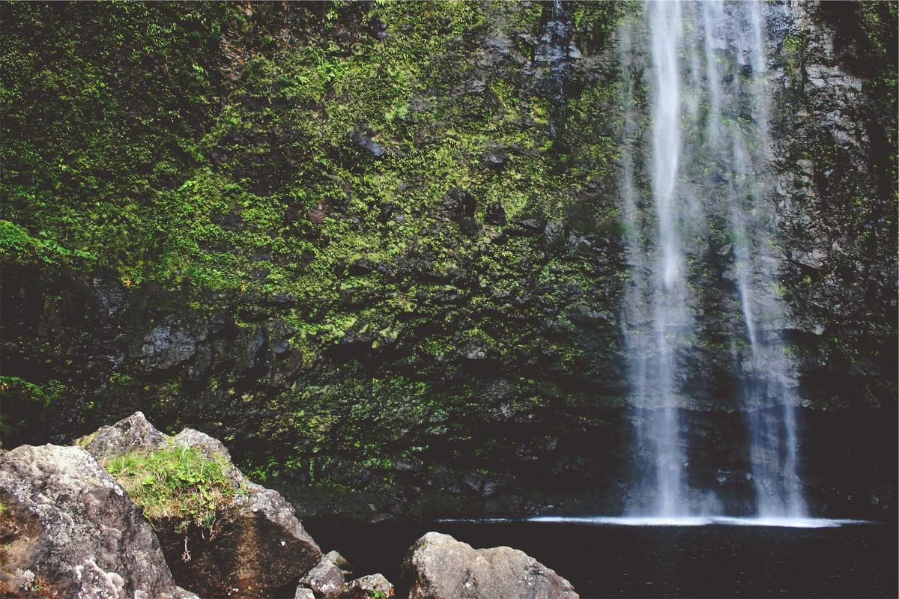

SMARTWARDROBE EDITORIAL
Curated Fashion Analysis & Insights
穿搭档案 | 为什么我们都在怀念90年代的极简主义？

褪去繁杂，只留骨架的90年代街头
风格回潮 — 翻开1995年的老杂志，你很容易被一种近乎冷酷的清教徒美学击中。没有喧宾夺主的Logo，没有繁复累赘的叠穿。那是属于 Carolyn Bessette-Kennedy 的黄金时代——一件黑高领，一条直筒水洗蓝，便能赢得毫不费力。今天，当我们在‘静奢风’里寻找归宿时，其实潜意识里，都在试图重返那个只用轮廓说话的年代。

重磅真丝：用光泽感打破沉闷
材质即底气 — 极简，绝非寡淡。相反，它是对面料与剪裁的极限苛求。当你褪去所有装饰，支撑起整个气场的，便只剩下衣物本身的骨架。重磅真丝（Heavy Silk）在走动时泛起的微光，生单宁（Raw Denim）硬挺的筋骨，以及高支数羊绒贴合肌肤的包裹感。此时的衣服不再是遮蔽物，而是第二层肌肤。

Boxy Blazer带来的从容与力量
轮廓重塑 — 如何将这种旧时光的高级感穿入当下的日常？第一步：重塑轮廓。扔掉那些紧紧包裹身体、让人喘不过气的单品。选择一件肩线清晰、略带Oversize的男款西装（Boxy Blazer），内搭修身的针织吊带。这种‘外刚内柔’的视觉反差，正是90年代力量感与女性特质的完美平衡。

燕麦色系与皮革材质的温差碰撞
色彩克制术 — 第二步：色彩的克制与材质的碰撞。试着在一套Look中将颜色严格控制在三种以内：黑、白、燕麦色。为了避免无聊，你必须在材质上制造落差。比如，哑光的羊毛大衣，搭配泛着冷光的做旧皮靴；或是粗棒针织衫配上细腻的缎面半裙。颜色的极简，换来的是质感的丰盈。

不着痕迹的细节洁癖
20%配饰法则 — 细微之处见真章。90年代的配饰哲学，是‘点到为止’。摒弃夸张的亚克力和大piece珠宝。一条细若游丝的银质锁骨链，一只没有多余五金件的复古腋下包（Baguette Bag），亦或是一副带有冷调书卷气的窄边金属眼镜。它们不喧宾夺主，却在不经意间流露出主人的审美洁癖。

自信，是极简主义最好的内搭
自我确立 — 归根结底，90年代的极简主义并不是一种干瘪的穿搭公式，而是一场关于‘自我确立’的修行。它要求你足够了解自己的身体，足够自信地展示真实的轮廓。当你不再需要用夺目的色彩去虚张声势时，属于你自己的风格，才刚刚开始。
✦ ✦ ✦
未来症候群：解析机能风背后的废土美学与实操
情绪投射 — 穿上防风防水的冲锋衣，扣紧战术马甲上的尼龙搭扣，仿佛就能抵御一切未知的风险。机能风（Techwear）的崛起，本质上是现代人在面对不确定性时的一种心理防御机制。我们将对于科技的反思、对于都市生存的焦虑，全部具象化为了身上那些充满工业感与冷酷气息的机能单品。

无视比例，重塑机甲般的立体轮廓
打破常规轮廓 — 机能风最迷人的地方，在于它彻底粉碎了传统的人体黄金比例。它不再追求显高、显瘦，而是通过极致的上宽下窄，或者堆叠的口袋设计，重塑出一个犹如机甲战士般的废土轮廓。一件拥有超大风帽的Gore-Tex冲锋衣，搭配抽绳束脚的降落伞裤，是踏入这个领域的标准制服。

全黑语境下的材质博弈
All-Black的层次游戏 — 暗黑机能是这股风潮的中流砥柱。当你全身上下只有黑色时，材质的碰撞就成了决胜的关键。试着将哑光的防撕裂尼龙（Ripstop Nylon）、反光的防水拉链，以及粗糙的做旧帆布混搭在一起。在不同光线的折射下，即便是纯黑，也能呈现出如同深渊般迷人的层次落差。

犹如霓虹灯般的高饱和度色彩撕裂感
高对比度点缀 — 如果你觉得纯黑过于压抑，不妨尝试在配饰上引入高饱和度的‘赛博朋克色’。一双荧光绿的户外越野跑鞋，或者一根带有反光涂层的亮橘色伞绳项链，能瞬间点亮沉闷的暗色系。这种极端的明暗反差，像极了反乌托邦电影里，阴暗小巷中闪烁的霓虹灯。

硬核工业感与女性特质的张力
女性机能的性感表达 — 谁说机能风就一定得把自己裹得严严实实？近两年，‘废土辣妹风’正在重新定义女性机能。将战术胸包换成贴身的机能风抹胸，宽大的长裤替换为带有绑带设计的工装短裙，搭配一双及膝的厚底战术靴。这种在硬核防护与皮肤裸露之间游走的张力，是最高级的性感。
披上铠甲，直面都市的凛冽
向死而生 — 机能风是一场关于生存哲学的着装实验。它看似悲观冷酷，实则充满力量。它教我们在钢筋水泥的丛林里，依然能保持警惕、保持锐利。拉上拉链，戴上风帽，去直面这个世界的凛冽吧。
✦ ✦ ✦
美学解析：拆解 法式慵懒 Chic 的穿搭逻辑与底层逻辑

在慵懒与精致之间寻找喘息的平衡
现象观察 — 不要轻易把 法式慵懒 Chic 归结为一阵稍纵即逝的风潮。当一种穿搭风格开始在时装周场外频繁刷屏，并迅速向下渗透至日常街头时，它必然切中了当代人的某种集体情绪。它在慵懒与精致之间找到了一个微妙的平衡点，让我们得以在紧绷的都市生活中，获得一丝喘息的余地。

衣物与身体之间的空间感，即是高级
松弛感的伪装 — 这种风格最致命的吸引力，在于其精心计算过的‘松弛感’。看似随手披上的外套、没有刻意打理的卷发，背后其实是对剪裁与版型的严格把控。一件肩线恰到好处的垂坠感大衣，一条能随着步伐流动的阔腿裤，这些没有硬性束缚的单品，在走动时产生的空间感，就是高级感的来源。

三明治叠穿：脱下外套依然无懈可击
三明治叠穿法则 — 实操层面，我们极力推荐‘三明治叠穿法’。放弃那些笨重单调的一件式冬装。最内层，穿上一件亲肤的羊绒打底或真丝衬衫；中间层，用针织马甲或牛仔外套建立色彩与材质的过渡；最外层，披上一件线条流畅的廓形风衣。随着气温变化增减衣物，每一层都大有看头。

硬挺的皮具是柔软造型的定海神针
配饰的克制与爆发 — 在整体造型偏向素雅时，鞋包与首饰便成了决定成败的锚点。不要使用过于柔软无骨的包袋，一只皮质硬挺、线条锋利的几何感手袋，能瞬间拉高整体的精气神。耳畔一抹低调但有分量的做旧金属，能在微风吹过发梢时，留下令人难忘的惊鸿一瞥。

同色系渐变：如同电影调色般的静谧
色彩的渐变艺术 — 抛弃那些刺眼的撞色，尝试在同一色系中寻找深浅的渐变。比如从浅燕麦、驼色过渡到深咖色，或者由灰蓝渐变至藏青。这种在色谱上极其克制的游走，不仅能在视觉上拉长身形，更能赋予穿搭一种如同电影调色般的静谧质感。

向内探索，取悦自己
风格的终局 — 穿搭从来都不是一门关于炫耀的学问，而是一场向内探索的旅程。法式慵懒 Chic 之所以迷人，是因为它把取悦他人的目光，收回到了取悦自己身上。掌握这套逻辑，不是为了追赶潮流，而是为了在潮流退去后，依然知道自己是谁。
✦ ✦ ✦
穿搭档案 | 为什么我们都在怀念90年代的极简主义？

褪去繁杂，只留骨架的90年代街头
风格回潮 — 翻开1995年的老杂志，你很容易被一种近乎冷酷的清教徒美学击中。没有喧宾夺主的Logo，没有繁复累赘的叠穿。那是属于 Carolyn Bessette-Kennedy 的黄金时代——一件黑高领，一条直筒水洗蓝，便能赢得毫不费力。今天，当我们在‘静奢风’里寻找归宿时，其实潜意识里，都在试图重返那个只用轮廓说话的年代。

重磅真丝：用光泽感打破沉闷
材质即底气 — 极简，绝非寡淡。相反，它是对面料与剪裁的极限苛求。当你褪去所有装饰，支撑起整个气场的，便只剩下衣物本身的骨架。重磅真丝（Heavy Silk）在走动时泛起的微光，生单宁（Raw Denim）硬挺的筋骨，以及高支数羊绒贴合肌肤的包裹感。此时的衣服不再是遮蔽物，而是第二层肌肤。

Boxy Blazer带来的从容与力量
轮廓重塑 — 如何将这种旧时光的高级感穿入当下的日常？第一步：重塑轮廓。扔掉那些紧紧包裹身体、让人喘不过气的单品。选择一件肩线清晰、略带Oversize的男款西装（Boxy Blazer），内搭修身的针织吊带。这种‘外刚内柔’的视觉反差，正是90年代力量感与女性特质的完美平衡。

燕麦色系与皮革材质的温差碰撞
色彩克制术 — 第二步：色彩的克制与材质的碰撞。试着在一套Look中将颜色严格控制在三种以内：黑、白、燕麦色。为了避免无聊，你必须在材质上制造落差。比如，哑光的羊毛大衣，搭配泛着冷光的做旧皮靴；或是粗棒针织衫配上细腻的缎面半裙。颜色的极简，换来的是质感的丰盈。

不着痕迹的细节洁癖
20%配饰法则 — 细微之处见真章。90年代的配饰哲学，是‘点到为止’。摒弃夸张的亚克力和大piece珠宝。一条细若游丝的银质锁骨链，一只没有多余五金件的复古腋下包（Baguette Bag），亦或是一副带有冷调书卷气的窄边金属眼镜。它们不喧宾夺主，却在不经意间流露出主人的审美洁癖。

自信，是极简主义最好的内搭
自我确立 — 归根结底，90年代的极简主义并不是一种干瘪的穿搭公式，而是一场关于‘自我确立’的修行。它要求你足够了解自己的身体，足够自信地展示真实的轮廓。当你不再需要用夺目的色彩去虚张声势时，属于你自己的风格，才刚刚开始。
✦ ✦ ✦
美学解析：拆解 无性别 Oversize 剪裁 的穿搭逻辑与底层逻辑

在慵懒与精致之间寻找喘息的平衡
现象观察 — 不要轻易把 无性别 Oversize 剪裁 归结为一阵稍纵即逝的风潮。当一种穿搭风格开始在时装周场外频繁刷屏，并迅速向下渗透至日常街头时，它必然切中了当代人的某种集体情绪。它在慵懒与精致之间找到了一个微妙的平衡点，让我们得以在紧绷的都市生活中，获得一丝喘息的余地。

衣物与身体之间的空间感，即是高级
松弛感的伪装 — 这种风格最致命的吸引力，在于其精心计算过的‘松弛感’。看似随手披上的外套、没有刻意打理的卷发，背后其实是对剪裁与版型的严格把控。一件肩线恰到好处的垂坠感大衣，一条能随着步伐流动的阔腿裤，这些没有硬性束缚的单品，在走动时产生的空间感，就是高级感的来源。

三明治叠穿：脱下外套依然无懈可击
三明治叠穿法则 — 实操层面，我们极力推荐‘三明治叠穿法’。放弃那些笨重单调的一件式冬装。最内层，穿上一件亲肤的羊绒打底或真丝衬衫；中间层，用针织马甲或牛仔外套建立色彩与材质的过渡；最外层，披上一件线条流畅的廓形风衣。随着气温变化增减衣物，每一层都大有看头。

硬挺的皮具是柔软造型的定海神针
配饰的克制与爆发 — 在整体造型偏向素雅时，鞋包与首饰便成了决定成败的锚点。不要使用过于柔软无骨的包袋，一只皮质硬挺、线条锋利的几何感手袋，能瞬间拉高整体的精气神。耳畔一抹低调但有分量的做旧金属，能在微风吹过发梢时，留下令人难忘的惊鸿一瞥。

同色系渐变：如同电影调色般的静谧
色彩的渐变艺术 — 抛弃那些刺眼的撞色，尝试在同一色系中寻找深浅的渐变。比如从浅燕麦、驼色过渡到深咖色，或者由灰蓝渐变至藏青。这种在色谱上极其克制的游走，不仅能在视觉上拉长身形，更能赋予穿搭一种如同电影调色般的静谧质感。
向内探索，取悦自己
风格的终局 — 穿搭从来都不是一门关于炫耀的学问，而是一场向内探索的旅程。无性别 Oversize 剪裁 之所以迷人，是因为它把取悦他人的目光，收回到了取悦自己身上。掌握这套逻辑，不是为了追赶潮流，而是为了在潮流退去后，依然知道自己是谁。